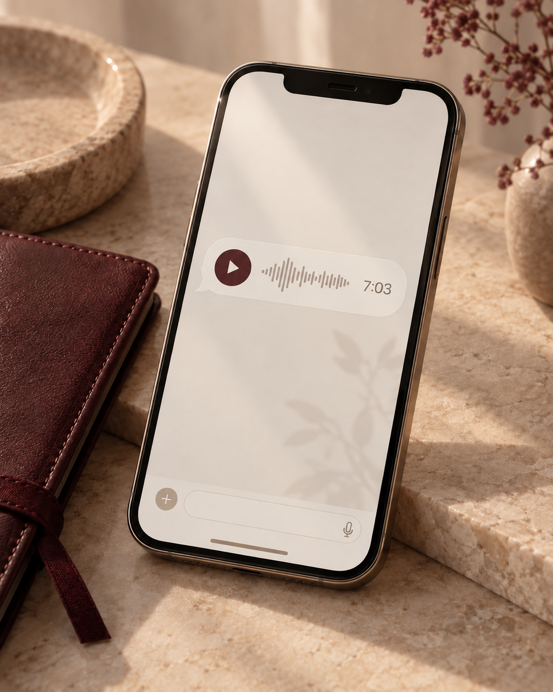
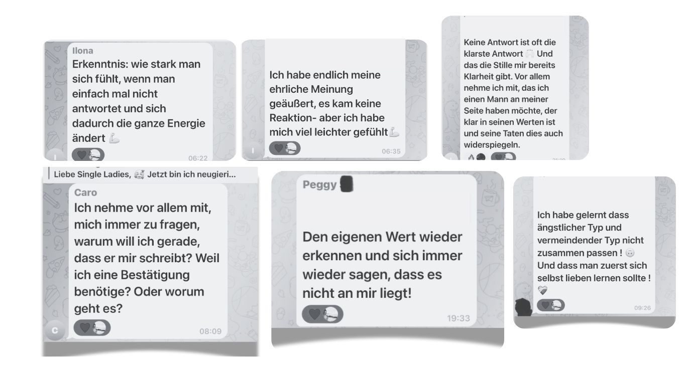
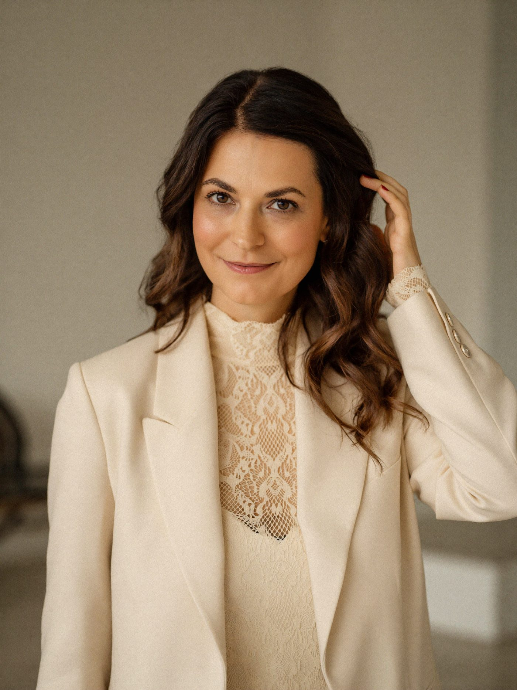
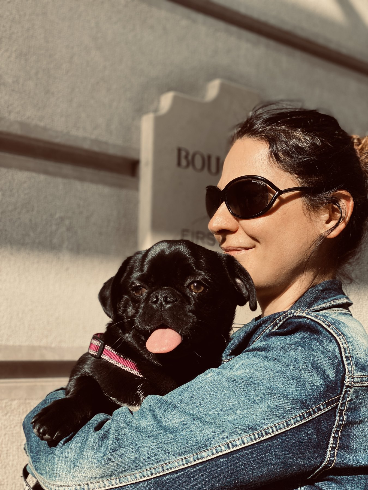

Was will ICH?
Bevor du auf ihn schaust, schaust du auf dich. Willst du eine Beziehung? Kinder? Eine gemeinsame Zukunft? Und wo verhandelst du nicht?
Das legst du fest, bevor deine Gefühle anfangen, es für diesen einen Mann zu verschieben.
Next One
Damit aus „mal schauen“ nicht noch ein Jahr wird. Ohne dass du noch einen Chatverlauf auseinandernimmst.
Du hast genug Screenshots an deine Freundin geschickt. Drei Fragen reichen:
Was will ich?Was bietet er an?Passt das zusammen?
Sieben Audios, eins pro Tag.
37 € einmalig · Start am 28. September · Dauerhafter Zugang
Der Unterschied
Er hat nicht zugesagt.
Er hat gesagt: er meldet sich.
Deiner Freundin sagst du nicht ab. Du schreibst: „Ich weiß noch nicht, ob ich Samstag kann.“
Samstagnachmittag. Sofa. Handy neben dir.
Du schaust, ob er online war.
Du liest seine letzte Nachricht zum 7. Mal.
Wo ist es gekippt?
War deine letzte Nachricht zu viel?
Dann schickst du deiner Freundin eine 7:03 Minuten lange Sprachnachricht, um zu klären, wie er das gemeint hat. Sie hört sie sich an. Sie weiß es auch nicht.
Und irgendwann zwischen acht und zehn passiert es.
Aus „Das reicht mir nicht“ wird wieder „Vielleicht erwarte ich zu viel.“
„Das ist für mich halt No-Go eigentlich. Es ist ein No-Go, aber ich bin dann immer noch so, ja, dann habe ich es halt gemacht.“
Lies den Satz nochmal.
Sie kennt ihre Grenze. Und übergeht sie im selben Satz.
Genau das ist das Problem.

Der eigentliche Grund
Er sagt: „Mal schauen.“ Du hörst: „Er braucht noch Zeit.“
Er plant nicht. Du denkst: „Er ist einfach spontan.“
Er will sich nicht festlegen. Du denkst: „Ich will keinen Druck machen.“
Du verstehst ihn schnell genug.
Du übersetzt nur zu lange.
Du willst eine Beziehung. Kinder. Heiraten. Sagst du das auch?
Oder sitzt du beim ersten Kaffee, findest ihn gut und hörst dich sagen: „Ich bin da ganz entspannt. Mal schauen, was passiert.“
Also machst du deinen Wunsch kleiner.
Damit die Chance auf ihn größer bleibt.
37 € einmalig · Start am 28. September · Dauerhafter Zugang
Was dich das kostet
Dann triffst du dich unverbindlich, obwohl du etwas Festes willst.
Oder ihr seid längst etwas. Nur jedes Gespräch über nächstes Jahr endet mit: „Lass uns doch erstmal schauen, wie es sich entwickelt.“
Drei Monate später schaut ihr immer noch.
Ein Jahr später auch.
Manchmal zwei.
Und während er noch schaut, wartest du.
Du brauchst keine Erklärung mehr, warum er sich nicht festlegt.
Du brauchst eine Antwort, ob du so lange warten willst.
◇ Der neue Blick ◇
Und entscheiden, ob du das willst.
Was in ihm vorgeht, weiß ich nicht. Nach 10 Jahren mit über 500 Frauen sage ich dir ehrlich: Ich kann nicht in den Kopf eines Mannes schauen. Du auch nicht.
Kein Mann sagt dir beim ersten Kaffee: „Perfekt. Hochzeit im Mai?“
Ein Mann kann dir sagen: „Ja, ich will eine Beziehung. Kinder will ich auch. Und jetzt schauen wir, ob das mit uns passt.“
Er verspricht dir nichts. Er sagt dir, wohin er will. Und du siehst, ob das deine Richtung ist.
So einen Satz bekommst du nur, wenn du vorher fragst. Und genau da wird aus „Ich will eine Beziehung“ wieder „Ich bin da ganz entspannt.“
Dafür sind die 7 Tage.
37 € einmalig · Start am 28. September · Dauerhafter Zugang
◇ Das bekommst du ◇
Nicht mehr darauf, was er meinen könnte. Darauf, was da ist.
In 7 Audios gehst du durch die drei Fragen, die du brauchst, wenn du einen Mann willst und anfängst, Dinge schönzureden:
Bevor du auf ihn schaust, schaust du auf dich. Willst du eine Beziehung? Kinder? Eine gemeinsame Zukunft? Und wo verhandelst du nicht?
Das legst du fest, bevor deine Gefühle anfangen, es für diesen einen Mann zu verschieben.
Jetzt hörst du auf, seine Nachrichten zu deuten. Du schaust auf das, was passiert. Plant er mit dir? Wird er konkret? Passen seine Worte zu seinem Verhalten?
Und du lernst, wie du früh fragst, ohne aus dem ersten Kaffee ein Bewerbungsgespräch zu machen.
Die Frage, die du bisher immer vertagt hast: Reicht dir das?
Nicht deiner Freundin. Nicht Instagram. Dir.
Vielleicht lautet deine Antwort: Ja. THIS ONE.
Vielleicht lautet sie: Nein. NEXT ONE.
Beides ist eine Antwort. Und genau darum geht es.
7 TAGE. 7 AUDIOS. EINE ENTSCHEIDUNG, DIE DEINE IST.
Du bekommst nicht sieben weitere Dinge zum Nachdenken. Du gehst sieben Tage lang durch dieselben drei Fragen, bis sie sitzen: Was will ich? Was bietet er an? Passt das zusammen?
Damit du beim nächsten „Mal schauen“ nicht drei Monate rätselst, was er gemeint haben könnte.
Damit du weißt, was du damit machst.
Ein fetter Bonus
Der NEXT ONE READ ist dein persönlicher Reality Check für genau die Situation, über die du gerade zu viel nachdenkst.
Er schreibt: „War richtig schön gestern. Ich meld mich die Tage.“
Du liest es dreimal. Dann schickst du es deiner Freundin. Sie schreibt: „Klingt doch gut?“ Und du merkst: Sie weiß es auch nicht.
Genau da kommt dein READ rein.
Du gibst seine Nachricht ein oder beschreibst kurz, was zwischen euch passiert ist. Dann beantwortest du fünf Fragen:
Danach liegen vier Dinge nebeneinander, die in deinem Kopf sonst ineinanderlaufen:
Was du willst. Was er sagt. Was er tut. Was du daraus machst.
Dein READ gleicht ab, was du willst und was er dir gerade anbietet.
Was er sagt und was er tut, zeigt in dieselbe Richtung wie dein Wunsch. Du musst nichts zwischen den Zeilen suchen.
Für einen klaren Abgleich fehlt etwas: eine Aussage, eine Handlung oder ein Zeitpunkt. Du siehst, worauf du gerade wartest. Und entscheidest, wie lange du das willst.
Was er gerade sagt und tut, liegt unter dem, was du willst. Nicht seine Absichten. Nicht seine Zukunft. Sein Angebot von heute.
Dazu zeigt dir dein READ, wo seine Worte und seine Taten auseinandergehen. Und an welcher Stelle du die Lücke gerade mit Hoffnung füllst.
Kein Chat-Orakel. Kein „Was meint er damit?“. Kein Urteil darüber, ob er der Richtige ist. Dein READ trennt deinen Wunsch, seine Worte, seine Taten und das, was du daraus machst.
Damit du nicht noch fünf Freundinnen fragst, was „Ich meld mich“ bedeutet. Damit du siehst, was du für deine Entscheidung wissen musst: Was will ich? Was bietet er an? Passt das zusammen?
1 NEXT ONE READ ist in NEXT ONE inklusive.
Was du daraus machst, bleibt bei dir.
Und wie sich das anfühlt
Dein Handy liegt auf dem Tisch. Display nach unten.
Du schaust nicht, ob er online war. Du musst dich dafür nicht zusammenreißen. Du weißt, was er dir anbietet. Und du hast entschieden, was du damit machst.
Du bist verabredet.
Nicht falls er absagt. Verabredet.
Du hältst dir keinen Abend mehr frei für ein Vielleicht.
Deine Zeit gehört wieder dir.
Next One starten →Nach den 7 Tagen

Sie hat nicht bekommen, was sie wollte. Sie hat bekommen, was sie brauchte: eine Antwort.
Und genau darum geht es. Ob er sich für dich entscheidet, liegt nicht in deiner Hand. Ob du noch Monate brauchst, um zu entscheiden, was du mit seinem Angebot machst, schon.
Eine andere Teilnehmerin:
„Ich nehme vor allem mit, mich immer zu fragen: Warum will ich gerade, dass er mir schreibt?“
Aus „Warum schreibt er nicht?“
wird „Warum brauche ich gerade seine Nachricht?“
Das ist der Moment, in dem du aufhörst, nur ihn zu beobachten. Und wieder anfängst, dir selbst zuzuhören.
Wann jemand kommt, weiß ich nicht. Und ob der Mann, den du gerade willst, THIS ONE ist, weiß ich auch nicht.
Vielleicht lautet deine Antwort nach diesen 7 Tagen: THIS ONE. Dann bleibst du. Diesmal nicht aus Hoffnung. Diesmal, weil das, was er dir anbietet, zu dem passt, was du willst.
Vielleicht liebt er dich. Vielleicht hat er Angst. Vielleicht braucht er Zeit. Das kann alles sein. Während du herausfinden willst, was in ihm vorgeht, bleibt die Frage liegen, die zählt: Was bietet er dir an?
Er muss sich nicht für dich entscheiden.
Du musst entscheiden, ob dir das reicht.
Du brauchst niemanden, der dir sagt, was du tun sollst.Du brauchst drei Fragen, mit denen du es selbst entscheidest.
NEXT ONE verändert nicht sein Angebot.Es verändert, wie lange du brauchst, um es zu sehen.
Ich arbeite mit Frauen, die entscheiden wollen, was für sie reicht. Nicht mit Frauen, die noch eine Meinung sammeln, was er gemeint haben könnte.

Über mich
Seit über 10 Jahren arbeite ich mit Frauen an genau diesem Moment: „Das reicht mir nicht.“ Fünf Minuten später: „Vielleicht erwarte ich zu viel.“
Über 500 Frauen habe ich begleitet. Und ich habe drei Ausbildungen, die genau an dieser Stelle zusammenspielen.
Weil aus einem klaren „Das reicht mir nicht.“ in fünf Minuten wieder „Vielleicht erwarte ich zu viel.“ wird. Ich zeige dir die Stelle, an der du deine eigene Antwort überschreibst.
Weil ich dich nicht frage, was mit dir nicht stimmt. Wir schauen darauf, was du willst und welche Beziehung du führen willst. Nicht darauf, wie du dich verändern musst, damit er bleibt.
Weil du um 22:17 Uhr längst weißt, dass etwas nicht passt. Und dann fängt dein Kopf an, darüber zu verhandeln. Wir bringen beides wieder zusammen.
Und noch etwas über mich
Und dann gibt es den Mops.
Ein Mops verbiegt sich für niemanden.
Und wird trotzdem geliebt.

Er hat seinen eigenen Kopf. Er macht keine Kunststücke, damit man ihn mag. Er sieht aus wie er aussieht und entschuldigt sich nicht dafür.
Ich bin der Mops.
Samstagabend sitze ich mit einem Glas Champagner-Rosé auf dem Sofa. Der Mops liegt neben mir. Und mein Handy liegt mit dem Display nach unten.
Ja, Champagner an einem normalen Samstag. Manche finden das übertrieben.
Das ist okay. Ich arbeite nicht mit denen.
Next One
37 €
Einmalig. Start am 28. September. Dauerhafter Zugang.
Ja, ich will es wissen →Sichere Zahlung · Start am 28. September
7 Tage kosten dich 37 €.
Noch ein Jahr „mal schauen“ kostet dich mehr.
Noch Fragen?
Ja. Jeden Tag gibt es eine Aufgabe fürs Daten und eine fürs Hin und Her. Wenn du gerade jemanden kennenlernst, stellst du die Fragen, bevor aus drei Dates drei ungeklärte Jahre werden.
Du entscheidest, was du wann sagst. An Tag 1 sagst du es nur dir. Ab Tag 3 zeige ich dir, wie du früh fragst, ohne aus dem ersten Kaffee ein Bewerbungsgespräch zu machen.
Dann weißt du es diese Woche. Nicht irgendwann nächstes Jahr.
So viel, wie du brauchst, um die jeweilige Frage ehrlich zu beantworten. Die Aufgabe passiert in deinem Alltag. Nicht drei Stunden mit Textmarker am Schreibtisch.
Ab dem 28. September erhältst du Zugang zu NEXT ONE. Die Audios begleiten dich durch die 7 Tage und bleiben danach dauerhaft für dich verfügbar.
Gut. Dann lesen wir das nicht nochmal. Warum er sich zurückzieht, lernst du hier nicht. Was seine Kindheit damit zu tun hat, auch nicht.
Du klärst drei Dinge: Was will ich? Was bietet er an? Passt das zusammen? Mehr brauchst du dafür nicht.
Deine Einladung
Entweder er hat zugesagt. Oder du bist woanders.
Er weiß nicht, was er will?
37 € · Start am 28. September · Dauerhafter Zugang
Das ist kein Kurs über Männer. Das ist die Woche, in der du aufhörst zu raten.